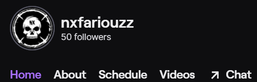

Hobby's



Mijn huidige hobby’s zijn:
- Karting, dit is racen maar dan in kleine karren die tot 128 km/h kunnen gaan, ik doe dit omdat ik me hierbij kam uitleven zonder achter een computer te zitten of online te zijn. Op de foto zie je mij in een zo een kart. Hier ben ik in aanraking gekomen op een jonge leeftijd bij een feestje en ik vond het altijd stress verlossend en relaxerend terwijl ook spannend en leuk.
- programmeren, dit is een redelijk breed onderwerp, ik bedoel met programmeren website design, discord bots creëren, leuke applicaties creëren enzovoort. Ik ben hiermee eerst in aanraking gekomen door discord omdat ik heel graag een bot ervoor maken en ik leerde Javascript erdoor. Website design en applicaties maken heb ik geleerd op middelbaar en sindsdien wou ik er vaker met bezig zijn dus houd ik me er soms ook met bezig in mijn vrije tijd. Programmeren kan soms heel irritant zijn met domme foutjes maar als je uiteindelijk een werkend product hebt kan dat een van de beste dingen zijn dat je meemaakt.
- Bakken, van al men huidige hobby’s buiten programmeren lijkt dit het meest op programmeren. Omdat je bij bakken voor recepten stappen moet volgen om een gerecht te hebben. Ook is dit heel leuk om je met bezig te houden aan gezien je ook heel veel kan maken. Hier kan je net zoals bij programmeren heel veel inspiratie uit alles halen. Ik ben hiermee in aanraking gekomen door mijn verjaardag omdat ik elk jaar op die dag traktaties meenam tijdens school en had altijd wel plezier tijdens de proces van het maken. Door corona is deze traditie dan ook wel gestopt.
- Streamen, met mijn online identiteit Nx of Nxfariouz op twitch ga ik soms live en speel ik spelletjes, chat ik met mensen en ga ik met andere streamers om. Ik wou dit doen omdat het altijd al wel leuk leek om te doen en zo kan je delen wat je leuk vindt om te doen bijvoorbeeld spelletjes spelen, programmeren, enzovoort. Ik ben begonnen streamen van wegen online vrienden die me het aanspoorden om te starten en hielpen mij hier ook mee.
Vroeger heb ik ook nog andere hobby’s gehad ik heb zo goed als alle sporten gedaan. Momenteel doe ik er geen enkel omdat ik me liever focus op wat ik graag doe. Vroegere hobby’s zijn bijvoorbeeld muziek creëren, youtuber, tennisser en nog veel meer, heel veel meer. Dit zijn mijn huidige hobby’s met uitleg en een beetje achtergrond.